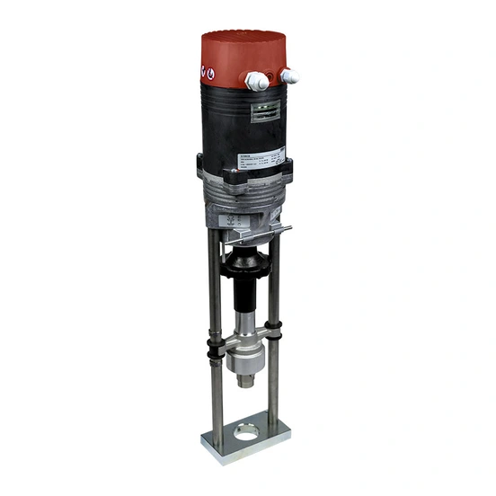

ELC là dòng actuator tuyến tính điện compact của Rotork, dùng cho van tuyến tính từ nhỏ đến lớn với thrust từ 0,6 kN đến 25 kN tùy model. Ngoài các model tiêu chuẩn, ELC còn có hai bản spring-return (ELC 100SR, ELC 250SR) cho ứng dụng cần về vị trí an toàn khi mất điện. Bài viết trình bày thrust/hành trình theo từng model và tiêu chí chọn đúng cấu hình cho van công nghiệp tại Việt Nam.

Trả lời nhanh
- ELC có 9 model tiêu chuẩn (ELC 55/55Y đến ELC 2500) với thrust từ 0,6 kN đến 25 kN, và 2 model spring-return (ELC 100SR, ELC 250SR).
- Hành trình (stroke) tăng theo thrust: từ khoảng 20 mm (model nhỏ) tới 100 mm (ELC 2500).
- Cấp bảo vệ IP54 hoặc IP65 tùy model.
- Điều khiển bằng vi xử lý tự động canh chỉnh, tín hiệu 3 điểm hoặc analog, tùy chọn output 4-20 mA và firmware P10 nâng cao trên một số model.
- Có manual override cho vận hành khẩn cấp và chức năng nhận diện lỗi khi van bị kẹt trong vận hành liên tục.
ELC Range là gì
ELC là actuator tuyến tính điện tiêu chuẩn và spring-return, thiết kế compact, đáng tin cậy và tiết kiệm chi phí cho ứng dụng van tuyến tính. Mỗi actuator có thời gian tác động điều chỉnh được, cấp bảo vệ IP54 hoặc IP65, và các tùy chọn nâng cao như tín hiệu output analog 4-20 mA, bộ giới hạn hành trình tích hợp (limit switch) và firmware P10 trên một số model cho điều khiển nâng cao hơn.
Bảng thrust/hành trình theo model
| Model | Thrust | Hành trình tối đa |
|---|---|---|
| ELC 55 / ELC 55Y | 0,6 kN | Không công bố cụ thể trên trang tổng quan |
| ELC 100 | 1 kN | 20 mm |
| ELC 160 | 1,6 kN | 30 mm |
| ELC 220 | 2,2 kN | 30 mm |
| ELC 400 | 4 kN | 60 mm |
| ELC 500 | 5 kN | 60 mm |
| ELC 1000 | 10 kN | 80 mm |
| ELC 1500 | 15 kN | 80 mm |
| ELC 2500 | 25 kN | 100 mm |
| ELC 100SR (spring-return) | 1 kN | 20 mm |
| ELC 250SR (spring-return) | 2,5 kN | 40 mm |
Tiêu chí chọn model ELC
- Thrust yêu cầu: đối chiếu thrust van với dải 0,6-25 kN của các model tiêu chuẩn, có biên an toàn theo khuyến nghị nhà sản xuất van.
- Hành trình (stroke): xác nhận hành trình model đã chọn đủ cho khoảng di chuyển thực tế của van.
- Yêu cầu fail-safe: nếu van cần về vị trí an toàn khi mất điện, chọn ELC 100SR hoặc ELC 250SR tùy thrust yêu cầu; nếu không cần, dùng model tiêu chuẩn.
- Tín hiệu điều khiển: xác nhận tín hiệu 3 điểm hoặc analog phù hợp hệ thống điều khiển hiện tại; nếu cần feedback 4-20 mA hoặc điều khiển nâng cao, xác nhận model có firmware P10.
- Môi trường lắp đặt: xác nhận cấp bảo vệ IP54 hoặc IP65 của model phù hợp điều kiện lắp đặt (trong nhà/ngoài trời, độ ẩm).
Model và range liên quan
| Model/range | Lý do liên quan | Trang sản phẩm |
|---|---|---|
| ELC 55–2500 / SR | Các model chính trong ELC Range | ELC actuator Rotork |
| Hanbay M/R | Lựa chọn actuator compact khác nếu van dưới 4 inch cần chứng nhận Ex | Hanbay M Range |
| CMA (CML) | Lựa chọn actuator tuyến tính khác nếu cần độ chính xác modulating cao hơn | CMA Rotork |
Mua ELC chính hãng tại Việt Nam
Fast Group Engineering là đơn vị cung cấp sản phẩm Rotork chính hãng tại Việt Nam, đầy đủ giấy tờ CO/CQ, catalogue và datasheet theo từng lô hàng. Đội ngũ kỹ thuật hỗ trợ đối chiếu model ELC theo thrust, hành trình và yêu cầu fail-safe trước khi báo giá.
Câu hỏi thường gặp
ELC Range dùng cho ứng dụng nào?
ELC là actuator tuyến tính điện compact, dùng cho van tuyến tính từ nhỏ đến lớn, thrust từ 0,6 kN đến 25 kN tùy model, theo trang sản phẩm hiện hành của Rotork.
ELC 100SR và ELC 250SR khác các model ELC thường ở điểm nào?
ELC 100SR và ELC 250SR là bản spring-return, tự động đưa van về vị trí an toàn khi mất điện, trong khi các model ELC tiêu chuẩn (ELC 55 đến ELC 2500) không có chức năng này. ELC 100SR có thrust 1 kN, hành trình tới 20 mm; ELC 250SR có thrust 2,5 kN, hành trình tới 40 mm.
ELC có cấp bảo vệ nước như thế nào?
Theo trang sản phẩm hiện hành, ELC có cấp bảo vệ IP54 hoặc IP65 tùy model — cần xác nhận cấp bảo vệ cụ thể của model đã chọn trước khi lắp đặt ngoài trời hoặc môi trường ẩm.
ELC có tín hiệu điều khiển nào?
ELC dùng vi xử lý với tự động canh chỉnh (self-calibration) khi khởi động, nhận tín hiệu vào 3 điểm hoặc analog điều chỉnh tự do, có tùy chọn tín hiệu ra 4-20 mA và firmware P10 trên một số model cho điều khiển nâng cao.
Cần gửi thông tin gì để chọn đúng model ELC?
Gửi thrust yêu cầu, hành trình (stroke) cần thiết, có cần chức năng spring-return khi mất điện hay không, tín hiệu điều khiển và cấp bảo vệ IP cần thiết cho Fast Group Engineering để đối chiếu đúng model trước khi báo giá.
Gửi dữ liệu van để chọn đúng model ELC
Để kiểm tra đúng mã, vui lòng gửi thrust yêu cầu, hành trình cần thiết, tín hiệu điều khiển và điều kiện môi trường lắp đặt cho Fast Group Engineering qua Zalo/điện thoại (+84) 938 888 958 hoặc email minhduc@fastgroup.vn.
Nguồn tham khảo
- rotork.com/en/products/electric-industrial-actuators/elc-range — truy cập 19/07/2026 (thrust/hành trình 11 model ELC, tính năng điều khiển, IP54/IP65).
Ghi chú nội bộ: bộ PDF_REFERENCE hiện không có brochure ELC chuyên biệt — toàn bộ số liệu trong bài lấy trực tiếp từ trang sản phẩm rotork.com hiện hành thay vì suy đoán từ tên model, đúng theo yêu cầu của brief cụm D. Chưa xác nhận cấp bảo vệ IP54 hay IP65 cụ thể cho từng model riêng lẻ (trang tổng quan chỉ nêu chung "IP54 or IP65") — reviewer cần xác nhận riêng theo model khi báo giá.